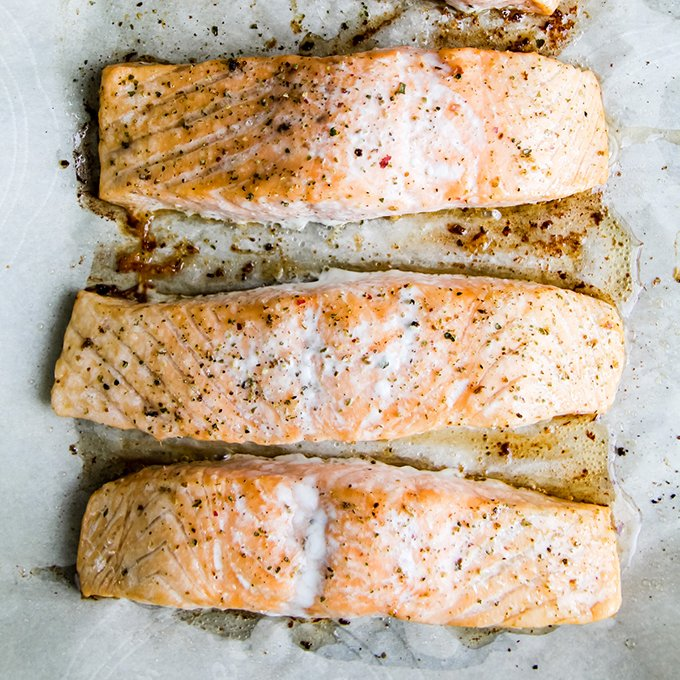

Ovenbaked salmon

Description:
Ovenbaked salmon is a wonderfully tasty dish,
requiring only ingredients found in the average kitchen, yet coming together
to produce a taste truly greater than the sum of its parts. It is also shockingly
easy to make, requiring only 5 minutes of actual work, and 15 minutes in the oven. Pairs excellently with hash browns and cucumber salad.
To make this simple yet great-tasting dish, simply follow the instructions below.
You will need:
- 4 Salmon-filets,
- soy sauce,
- olive oil,
- lemon and
- salt and pepper.
Steps:
- Set your oven to 140 degrees, preferably with hot-air, but the standard setting will also work. Lay the filets on a baking sheet.
- Apply a layer of soy sauce on the filets, preferably with a brush. Afterwards, drip gently with olive oil, and apply liberal amounts of salt and pepper.
- Finally, squeeze your lemon onto the filets. Put the filets in the oven for 14 minutes.
Bon appetit!